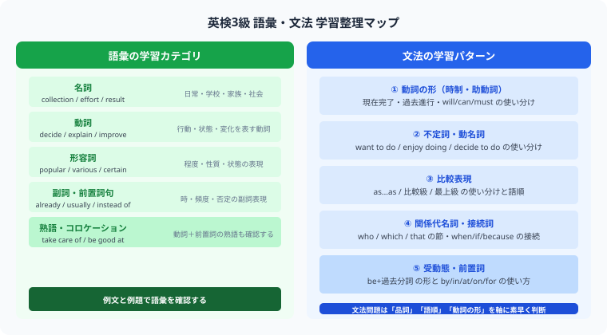

大問1の語彙問題では、日常的によく使われる普通名詞・集合名詞が中心です。過去問3回分で特に出題頻度が高かった18語を一覧にまとめました。
| 単語 | 訳 | 例文 |
|---|---|---|
| college | 大学 | Sarah is one of the members of our college event committee. （サラは大学の行事の委員会のメンバーの1人だ） |
| company | 会社、集団 | Mike wanted to join a famous ballet company. （マイクは有名なバレエ団に入りたかった） |
| floor | 床、階 | There is a big cafe on the first floor. （大きなカフェが1階にあった） |
| information | 情報 | My mother told me to send Amy some information about the event. （私の母は私にそのイベントに関する情報をエイミーに送るように言った） |
| scientist | 科学者 | I want to be a scientist in the future. （私は将来、科学者になりたい） |
| baseball | 野球 | Let's go and watch the baseball game on Saturday night. （土曜の夜、野球の試合を観に行こうよ） |
| husband | 夫 | This is my husband. （こちらが私の夫です） |
| wife | 妻 | Did you see my wife? （私の妻を見かけましたか？） |
| museum | 美術館、博物館 | How about going to the city art museum? （市のアート美術館に行くのはどうかな？） |
| fact | 事実 | In fact, Naomi is one of the best tennis players in Japan. （事実上、ナオミは日本で優秀なテニス選手の1人だ） |
| doctor | 医者 | I recommend you to see a doctor. （私は医者に行くことをあなたに勧めます） |
| aunt | 叔母 | What did Sarah ask her aunt to do? （サラは彼女の叔母に何をするように頼みましたか？） |
| airport | 空港 | After the new airport opened, more tourists started to visit the island. （新しい空港が開港してから、より多くの観光客が島を訪れ始めた） |
| restaurant | レストラン | My family celebrated my sister's birthday at a nice restaurant. （私の家族は妹の誕生日を良いレストランで祝った） |
| schedule | スケジュール、予定 | The special year-end train schedule will begin on December 30th. （電車の年末の特別な運行予定は12月30日から始まる） |
| speech | スピーチ | I have to give a speech in English in front of my whole school in September. （私は9月に全校生徒の前で英語でスピーチをする必要がある） |
| clothes | 衣服 | Tomorrow will be cold, so bring warm clothes. （明日は寒くなりそうなので、暖かい上着を持ってきてくださいね） |
| accident | 事故 | Did you hear about Sally's skiing accident? （サリーのスキー事故について聞いた？） |
文中の名詞をより詳しく説明したいとき、「名詞」と「名詞を説明する文」を結びつけるのが関係代名詞です。
たとえば "I visited the country."（私はその国を訪れた）の the country について「どんな国か」を説明したいとき、"The country has beautiful mountains." を関係代名詞 which で結ぶと：
"I visited the country which has beautiful mountains."
という1文ができます。
英検3級でよく出題される関係代名詞の使い方をまとめました。先行詞（直前の名詞）が人か物かと、後ろの文型（主語があるかどうか）を手がかりに解くのがコツです。
| 分類 | 例文 |
|---|---|
| 関係代名詞の省略 | Where is the cap (which/that) I bought yesterday?（私が昨日買ったキャップはどこですか？） |
| 目的格の which / that 先行詞＝物・直後に目的語なし |
I watched a movie which [that] Mr. Kurokawa directed.（私は黒川氏が監督した映画を観た） |
| 主格の which / that 先行詞＝物・直後に動詞 |
He is working at a company which [that] makes websites.（彼はウェブサイトを作る会社で働いている） |
| 主格の who 先行詞＝人・直後に動詞 |
Simon is my friend who can speak French.（サイモンは私の友達で、フランス語を話せる） |
Students（人）で、直後に主語がなく want（動詞）が続いているため、主格の who が正解です。comic（物）で、直後の my brother gave me に目的語がない（目的格）ため、which または that が適切。選択肢に which がないため ④ that が正解です。英検3級では、関係代名詞と見た目が似ている間接疑問文も出題されます。疑問文が別の文の中に組み込まれると、疑問詞の後の語順が 「主語＋動詞」 に変わります。
when will he → when he will に変わる点に注目！
| 疑問文 | 間接疑問文 |
|---|---|
| Where does she go? （彼女はどこに行きますか） |
I don't know where she goes. （私は、彼女がどこに行くのか知りません） |
| What is this? （これは何ですか） |
Do you know what this is? （これが何か知っていますか） |
why が正解です。英語力は、今日の積み重ねが半年後の自分を変えます。
この記事が少しでも参考になったら、この下にある【いいねボタン】をポチッと押してもらえると、めちゃくちゃ嬉しいです！ そして、Study Questで今日の学習時間を記録して、合格までの成長を「見える化」していきましょう。
※英検®は、公益財団法人日本英語検定協会の登録商標です。このコンテンツは、公益財団法人日本英語検定協会の承認や推奨、その他の検討を受けたものではありません。